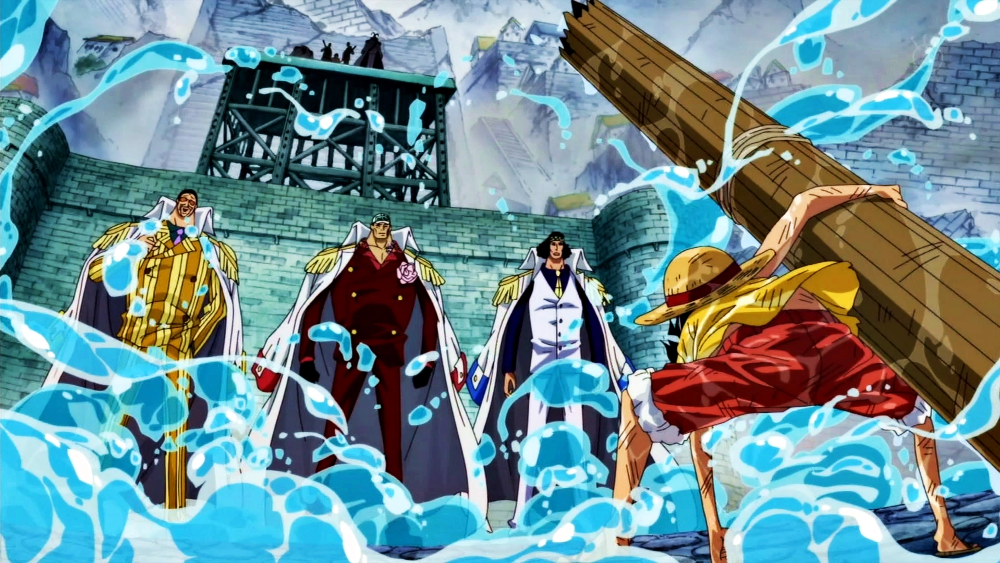
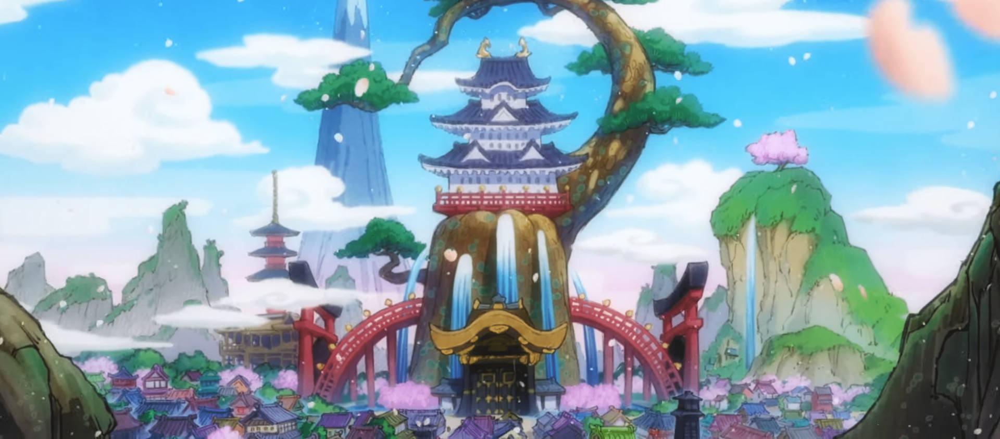
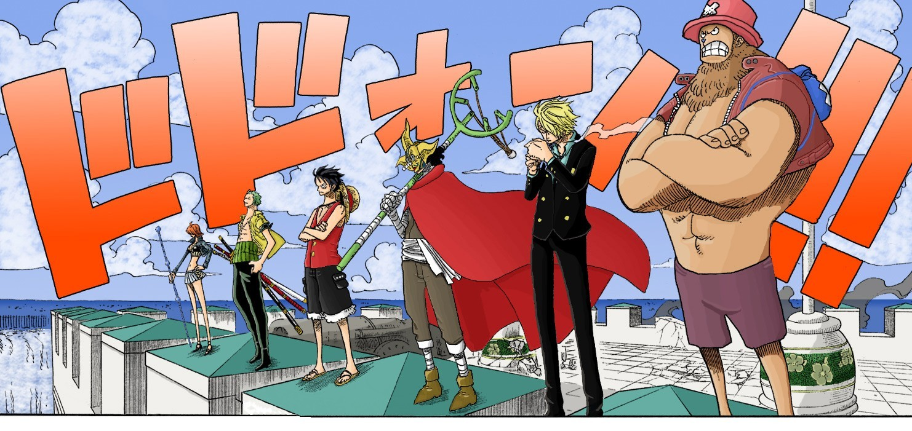

One Piece is a Japanese manga series written and illustrated by Eiichiro Oda. Wikipedia.
Top 3 story arcs
Marineford
Marineford becomes the stage for the war between the Marines and Whitebeard’s pirates, who fight to rescue Ace before his execution. The battle is filled with powerful clashes between legendary figures like Whitebeard, Admirals, and Warlords. Despite their efforts, Ace is killed, and Whitebeard also falls, marking the end of an era. This war dramatically changes the balance of power across the seas.
Wano
The Straw Hats ally with the samurai of Wano to overthrow Kaido, one of the Four Emperors. Wano is a land isolated under Kaido and Orochi’s tyrannical rule. The alliance stages a rebellion, leading to an epic battle at Onigashima. Luffy awakens new powers, and Kaido is finally defeated, liberating Wano. This victory reshapes the power dynamics of the world.
Enies Lobby
The Straw Hat Pirates launch a daring mission to rescue Nico Robin from the World Government. At Enies Lobby, they fight against CP9, an elite group of assassins. Luffy battles Rob Lucci in a fierce showdown, while the crew demonstrates their strongest teamwork yet. The arc highlights Robin’s past and ends with the declaration of war against the World Government.